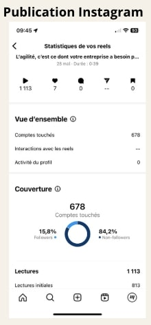
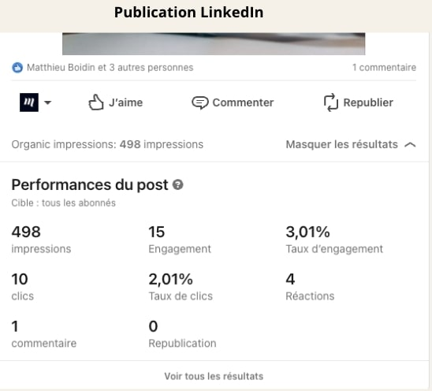
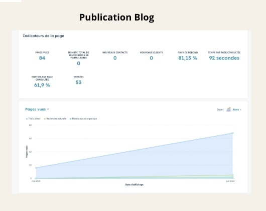
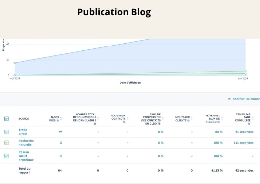
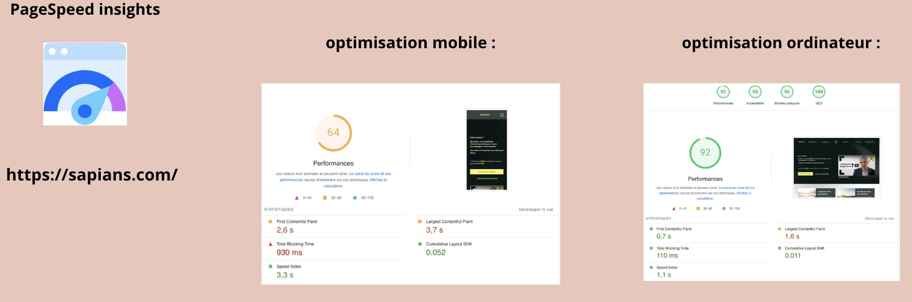

Marketing Digital
Lors de mon premier stage en SIO1, j'ai découvert le monde du marketing digital, ce qui m'a permis de m'y intéresser plus fortement. Mon travail a consisté à :
- Ajouter et optimiser du contenu sur un site web pour améliorer sa visibilité.
- Participer à la gestion des réseaux sociaux de l'entreprise, en publiant et programmant des posts.
- Utiliser des outils comme Google Analytics pour analyser le trafic du site web et en tirer des conclusions.
Cette expérience m'a permis de mieux comprendre les stratégies numériques et d'approfondir mon intérêt pour le marketing digital.
Galerie de mon travail

Résultats obtenus après les posts Instagram

Résultats obtenus après les posts LinkedIn

Résultats obtenus après les posts sur le blog de Make the Grade

Suite des résultats obtenus sur le blog

Optimisation du site web d'un client